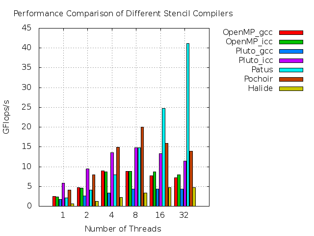
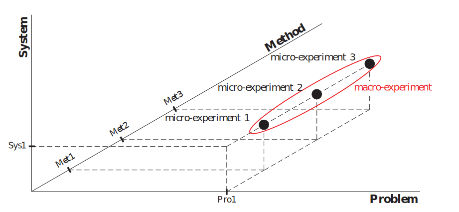
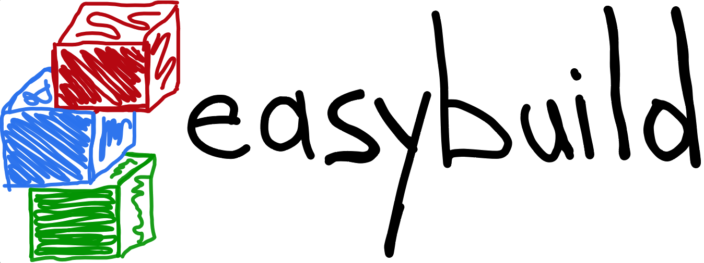
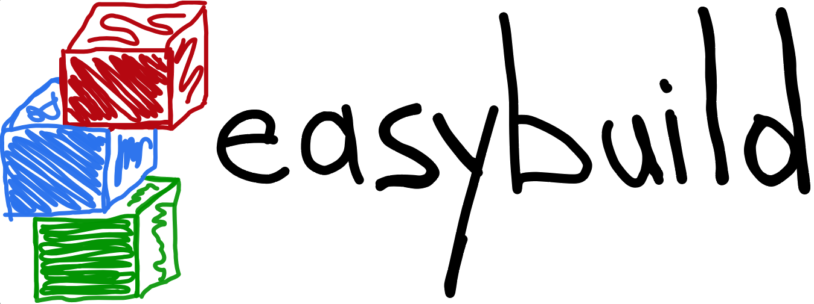

PROVA!
try, prove, convince
PROVA! is a distributed workflow and system management tool to conduct reproducible research in computational sciences. It focuses on simplicity and usability, while providing the functionalities needed to write HPC codes and run HPC experiments, from your browser. The tool takes care of the environment and manages the software stack. This way you have reproducible experiments, on all the HPC systems you have access to!
PROVA! is much more than a simple workflow tool: you can make your research reproducible and get beautiful svg graphs of the performance output for your chosen metric.


PROVA! for your research
Using PROVA! you can focus on the research, accessing your workspace and several parallel machines from your browser.
Space of Experiments

Computational problem solving in general can be described as follows: A computational problem is solved by an algorithmic
method on a compute system.
We call the triple (Problem / Method / System) a micro-experiment, which can be considered
as being one point in the space of experiments.
- Problem
- - specification of the problem including characteristic parameters
- Method
- - description of the algorithmic approach used to tackle the problem
- System
- - representation of the compute environment (both hardware and software), on which an experiment is run
Taxonomy of Reproducibility
Starting from the definition of the triple (Problem / Method / System), we can identify 3 different levels of reproducibility.
- Repetition
- Replication
- Re-experimentation
Re-run the same experiment or change parameters’ values.
It is the entry level of our taxonomy: each scientific research should at least reach such level in order to have credibility and
to be considered Science. It is basilar being able to run a code more than once and to get, if none of the prerequisites changes,
quantitatively and qualitatively similar results.
Re-run an experiment changing the system.
It is related to the system, intended as software and hardware, hosting an experiment.
An experiment should not be bound to a specific compute environment: reaching this level in our taxonomy ensures portability.
Due to the differences in hardware and software it is not possible to directly compare performance results of a replication
experiment: they will most likely be quantitatively different due to different hardware.
Re-run an experiment changing the method used to solve a problem.
If changing the methods drives to the same outputs, the scientific approach is proven. That means reaching this level ensures the
correctness of the approach.
 

PROVA! integrates with Node.js, Socketio, Ace, EasyBuild, and Likwid. This way, your workspace is always available anywhere from any device. You can access several parallel machines and run experiments on them having always the same environment, thus keeping control over the reproducibility of your work.